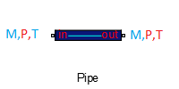

1.4 Pipe 

a. Description
This component is a 0D pipe. It is different than a simple
port connection because it impose a variable pressure on
both inlet and outlet ports.
The temperature is also imposed on the outlet port.
- The pipe imposes pressure at its inlet
- The pipe imposes both mass flow rate and
temperature at its outlet
b. Instructions
To ensure compilation, you must respect the following points :
- The pipe inlet port must be connected to a component
that impose both temperature and flow rate (such as a
compressor outlet or a valve outlet).
- The pipe outlet port must be connected to a component
that impose the flow rate
(such as a compressor inlet or a valve inlet).
- If you want to use an ideal pipe
(differentiation of P wrt time)the parameter 'Ideal' must
be set to 1. Otherwise, a non-Ideal pipe
(differentiation of rho and u wrt time) will be used.
- The parameters Vol and initial conditions P0 and T0
must be positive
Note : the T/P initial conditions should be equal to
the actual value on the scheme
(especially for pipe connected to sources).
©2015 The PI-02